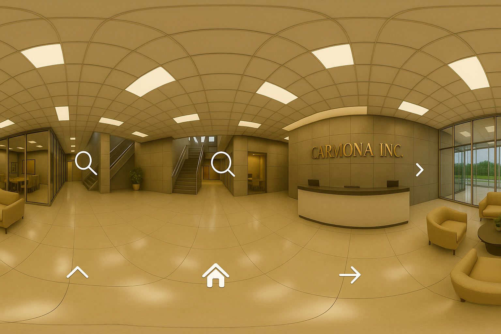
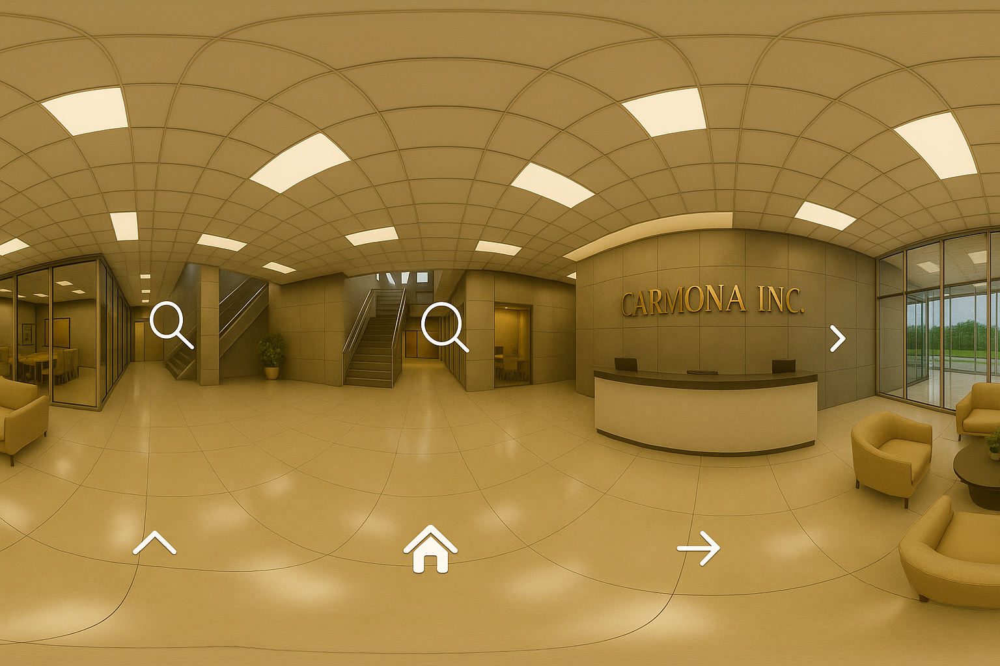

# HTML completo con:
# - Fade corregido
# - Cambio directo en
# - Hotspots clicables con cursor VR (gaze)
# - Íconos restaurados
# - Zoom y fullscreen
# - Paneo vertical/horizontal
html_vr_clickable = """
Visor 360 – demokittens
 
"""
# Guardar como index.html
final_vr_path = "/mnt/data/index.html"
with open(final_vr_path, "w") as f:
f.write(html_vr_clickable)
final_vr_path

"""
# Guardar como index.html
final_vr_path = "/mnt/data/index.html"
with open(final_vr_path, "w") as f:
f.write(html_vr_clickable)
final_vr_path